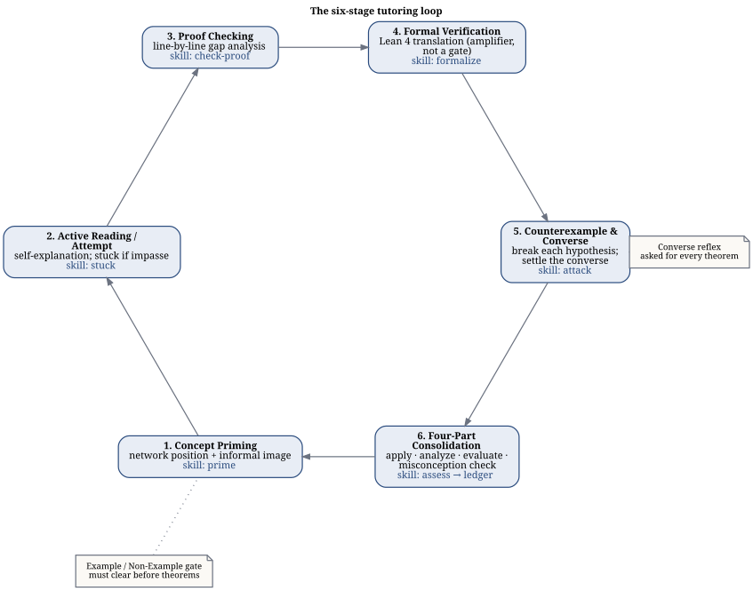
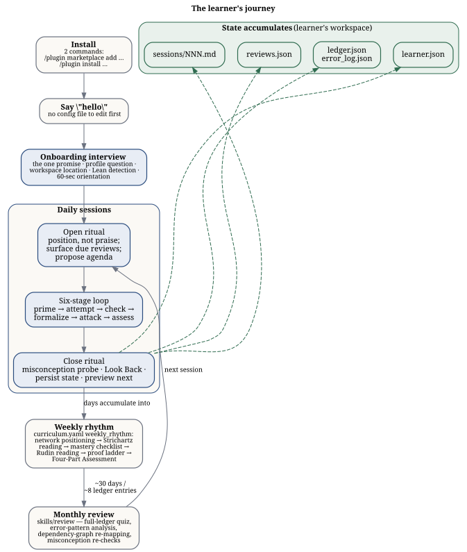

Real Analysis Tutor — Developer’s Manual
0.1 What this is
real-analysis-tutor is a Claude Code plugin (.claude-plugin/plugin.json) that tutors a learner through Real Analysis — Baby Rudin, Strichartz, and Alcock — using the V2.1 mastery methodology: Socratic questioning, misconception probing, a Theorem Ledger, spaced review, and optional Lean 4 verification. It is Socratic by architecture: the front-door skill (skills/tutor/SKILL.md) holds as its prime directive that the proof must come from the learner, and it never supplies a proof, a partial proof, or a single step of one (skills/tutor/SKILL.md, “Identity and prime directive”).
Author: Don Kearney. The tutor system and the V2.1 methodology it operationalizes — the Real Analysis Complete Study Guide (Kearney, 2026) and the Low-Friction Setup & Workflow Guide (Kearney, 2026), vendored under docs/source-guides/ — are Don Kearney’s work and property (README.md, CHANGELOG.md 2.1.0). The plugin implements that methodology as 10 skills, 5 agents, and 3 hooks (skills/, agents/, hooks/hooks.json).
0.2 Who this manual is for
This manual is for developers and curriculum authors, not learners. The learner-facing guarantee stated in README.md under “That’s it” is that a learner never needs to read anything in this repository beyond the two install commands: the tutor introduces itself, interviews the learner to pick a starting point, creates its own workspace, and offers Lean 4 setup only when needed. README.md stays install-only by design; this manual holds the “how” and “why” for anyone maintaining the plugin, auditing its pedagogy, or porting it to a new subject.
0.3 Quickstart
Two commands, run inside Claude Code (README.md):
/plugin marketplace add apollostream/real-analysis-tutor
/plugin install real-analysis-tutor@real-analysis-tutorThen say hello. There is no third command and no configuration file to edit first.
0.4 First run vs. returning sessions
On a first run — no .ra-tutor-workspace marker findable upward from the current directory (skills/tutor/SKILL.md, “First-run branch”) — the tutor runs the onboarding interview in skills/tutor/reference/onboarding.md: it makes the one promise (never hand over a proof), asks about proof experience to pick a quick_start_profiles entry from curriculum/real-analysis/curriculum.yaml, asks where to keep the study workspace (default ~/real-analysis-study), and materializes it from templates/workspace/ before Stage 1. On later sessions it instead runs the open ritual in skills/tutor/reference/open-ritual.md: reads saved state and due reviews through the engine (engine/state.py, engine/scheduler.py), greets by progress rather than praise, surfaces concepts due for review, and proposes an agenda before handing off to the six-stage loop (skills/tutor/reference/six-stage-loop.md).

0.5 The learner’s journey
Figure 2 traces the whole arc — from install to the accumulating record of a semester’s work. Two commands and a greeting start it; every session after that opens with the tutor recalling saved state, and every close ritual writes that state back to the workspace files shown at the bottom of the figure.

0.6 Map of this manual
- Pedagogy — the frameworks behind the tutoring loop: Solow, Pólya, Bloom, and Alcock, and how responsibility for each is divided across the plugin.
- Architecture — the three-layer design (deterministic engine, judgment-layer agents, fresh-context sessions), the hooks, and anti-leakage safeguards.
- Generality — how much of the plugin is a general tutoring engine versus Real Analysis-specific curriculum, and where the hardwired seams are.
- Extending — what a curriculum pack contains and what to edit to adapt the tutor to a new subject.
- Reference — engine API signatures, hook contracts, workspace layout, Theorem Ledger fields, error categories, and curriculum YAML schemas.
- FAQ — short, linked answers to the questions that come up most.